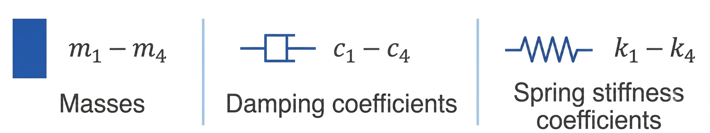

Model-Based Data
1
Data Selection - Model Data
ⓘ
In this section the excitation direction can be selected and the force constraints set.
3
Results from Hand-Arm-Model
ⓘ
This section shows model-based impedance data for selected subjects and force settings. To compare a second curve press the button beneath the chart.
Magnitude of MI
Phase Angle of MI
4
Four-mass oscillator model
ⓘ
This section contains the structure and components of the model used to compute the data in the "results from hand-arm-model" section.


What do the parameters mean?
The hand–arm system is represented as a four-mass oscillator model.
The masses, damping coefficients and stiffness values describe the dynamic behaviour of the system for the selected excitation direction and force combination.
4
Model Parameters
ⓘ
All the model parameters are listed here.
Masses [kg]
m1
m2
m3
m4
Damping [Ns/m]
d1
d2
d3
d4
Stiffness [N/m]
k1
k2
k3
k4